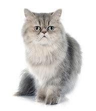
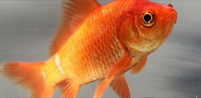

Persian Cat
Persian cats are thought to be one of the oldest cat breeds, dating as far back as the 1600s. They appear in Persian historical records as "the long-haired beauties," says Maggie Shuter, a Certified Feline Behavior Consultant (CFBC). Cat-lovers and historians alike say Persians roamed the world as popular companions on caravans and alongside world travelers. Even Queen Victoria had two Persians, and in 1871 the sought-after breed made a show-winning appearance at the very first modern cat show.
Today, Persian cats continue to charm their way to the top of popular breed lists. While they come with a fair share of fur maintenance, Persians are docile, intelligent, and make great companions in mellow households. And while they come in over 50 shades and color combinations, Persian cats are easily identified by their smooshed-in faces, big eyes, and lustrous coats. They have stocky bodies, averaging 10-15 inches in height and weighing 7-13 pounds.
Photo Gallery

Likes
- Quiet and Calm Environments
- Grooming and Pampering
- Affection and Attention
Goldfish
The Goldfish (Carassius auratus) is a freshwater fish in the family Cyprinidae of order Cypriniformes. It is commonly kept as a pet in indoor aquariums, and is one of the most popular aquarium fish. Goldfish released into the wild have become an invasive pest in parts of North America.
Native to China, the goldfish is a relatively small member of the carp family (which also includes the Prussian carp and the crucian carp). It was first selectively bred for color in imperial China more than 1,000 years ago, where several distinct breeds were developed. Goldfish breeds vary greatly in size, body shape, fin configuration, and coloration (various combinations of white, yellow, orange, red, brown, and black are known).
Photo Gallery


Likes
- Clean Water
- Feeding Time
- Social Interaction
Horse
Owning a horse is a very rewarding experience, but it is not for everyone. Be sure to thoroughly research before taking on the responsibility of owning a horse. If you want to learn to ride it is a good idea to take horseback riding lessons. If you enjoy it you may want to consider leasing a horse. There are many barns which will board your horse for you and allow you to come and ride anytime. Some of them will do the majority of the work involved in owning a horse, however this can get pricey. Know the horse you are riding. Horses spook very easily. Simple things like sticks and forest animals commonly spook horses. When riding a horse a helmet should be worn at all times.
RidingThere are two different types of riding, Western and English. Western generally consists of barrel racing, keyhole and pole racing among other events, whereas English generally consists of dressage, jumping, polo, Lacrosse and more. When dressage is performed it looks like the horse is dancing. The rider is guiding the horse through a series of complex maneuvers by slight movements of the rider's hands, legs and weight. The saddle a Western rider uses is different than the saddle an English rider would use. One key difference is the Western saddle consists of a horn, while the English saddle does not.
Photo Gallery
Likes
- Grazing and Foraging
- Social Interaction
- Exercise and Movement
Parrot
Parrots are birds of roughly 398 species, found mostly in tropical and subtropical regions (the greatest diversity living in Australasia and South America). The order is subdivided into three superfamilies: the Psittacoidea ("true" parrots), the Strigopoidea (New Zealand parrots), and the Cacatuoidea (cockatoos). Characteristic features of parrots are their curved bill, clawed zygodactyl feet, strong legs, and upright stance. Many parrots are vividly colored.
Parrots are noisy animals who need freedom to live happily. The parrots' loud vocalizations help them in the wild to communicate with other parrots in the distance. The larger species of parrots have ear shattering screams that can be heard from miles away.
Photo Gallery

Likes
- Social Interaction
- Toys and Enrichment
- Fresh Foods
Bacon Q Dog

Bacon Q. Dog is a 9yr old labradoodle. He prefers to spend his days lounging among the three different beds/couches that his family has gifted him. He enjoys a walk or two around the neighborhood, as long as he can pretend that he doesn't see any of the other animals to avoid the embarrassment of not wanting to admit he has no wolf-like skills in chasing them.
At night just as the rest of the family is ready to relax, Bacon suddenly wants to release all of his energy. He will place his toys on a mini couch and frantically drag the couch around, giving his toys "a ride." There is also a lot of rolling. Lots and lots of rolling.
Photo Gallery


Likes
- Belly rubs
- Playing tug-of-war
- Sneaking onto the couch